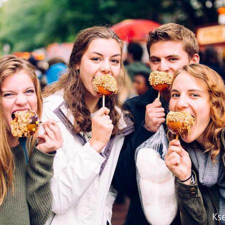

Welcome to Apple Festival 2021
About Apple Fest
Apple Harvest Festival is a great introduction to the rich farm and artist community of Ithaca. First time visitors can witness a variety of wonderful local entertainment happening all over downtown and inside shops, while also visiting the historical outdoor pedestrian shopping mall, the Ithaca Commons.
Join us Saturday and Sunday for two full days of performances!

Finger Lakes